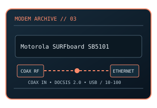

[ MODEL-SPECIFIC NETWORK HARDWARE ]
Motorola SURFboard SB5101 DOCSIS 2.0 Cable Modem
Legacy DOCSIS 2.0 cable modem with USB and Fast Ethernet host connections. This static record documents the modem-side line technology separately from its host interface and provider-dependent service rate.

MODEL IDENTIFICATION: Match the exact model number and hardware revision on the device label. Similar names, regional SKUs and provider-branded variants may have different ports, firmware, modulation or driver support.
Exact specifications and compatibility
| Cataloged model | Motorola SURFboard SB5101 DOCSIS 2.0 Cable Modem |
|---|---|
| Dedicated subcategory | Modems and line-termination devices |
| Modulation / line protocol | DOCSIS 2.0; single downstream and upstream channel; F-type coaxial RF input; single-channel DOCSIS 2.0 QAM (256-QAM downstream and QPSK/16-QAM return, according to plant configuration). |
| Line / physical interfaces | F-type coaxial RF input; single-channel DOCSIS 2.0 QAM (256-QAM downstream and QPSK/16-QAM return, according to plant configuration). |
| Nominal data rate | DOCSIS 2.0 PHY-era nominal ceiling is approximately 38 Mb/s downstream and 30 Mb/s upstream; actual ISP provisioning and RF conditions can be lower. |
| Bus / host interface | Coaxial cable line; one 10/100BASE-T RJ-45 Ethernet port and one USB 2.0 host connection. |
| Operating-system compatibility | Ethernet requires no modem-specific host driver. USB operation relied on legacy vendor drivers and contemporary Windows/macOS releases; modern 64-bit systems may lack compatible drivers. Ethernet is the practical legacy-host workaround. |
| Driver / firmware notes | This is an obsolete DOCSIS generation and many providers no longer activate it. Check current provider compatibility first. The specified 38/30 Mb/s values are nominal cable-channel rates, not measured application throughput. |
| Wi-Fi / switching | No Wi-Fi access point or Ethernet switching function is cataloged for this modem. |
Model-specific notes
This is an obsolete DOCSIS generation and many providers no longer activate it. Check current provider compatibility first. The specified 38/30 Mb/s values are nominal cable-channel rates, not measured application throughput. Nominal signaling rates are standards/model ceilings rather than specimen test results or a promise of ISP throughput.
Manufacturer, archive and standards references
- Internet Archive catalog copy of the SB5101 series user guideArchived model-specific guide or software documentation for identification and legacy host details.
- Motorola support portal (legacy SURFboard product support)Manufacturer source; confirm regional SKU, revision and present support status.
- CableLabs — DOCSIS technology referenceStandards reference for the relevant line/modem signaling family; implementation and ISP profile remain model-specific.
Check manufacturer and provider support for the exact region, revision, line profile, firmware and host OS before deployment.